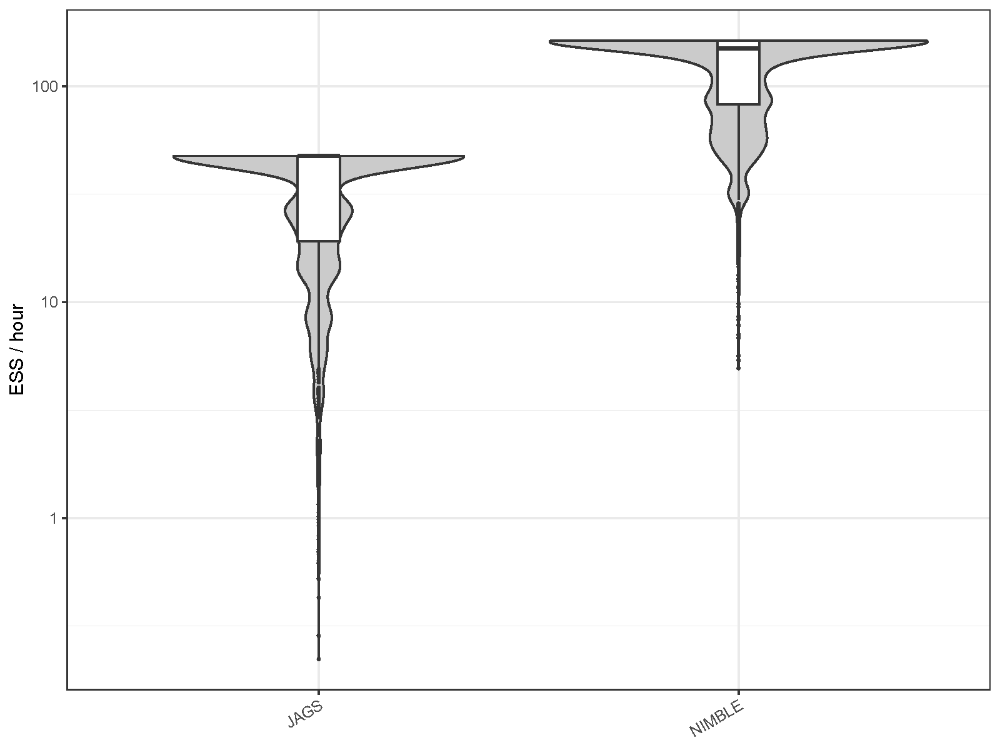
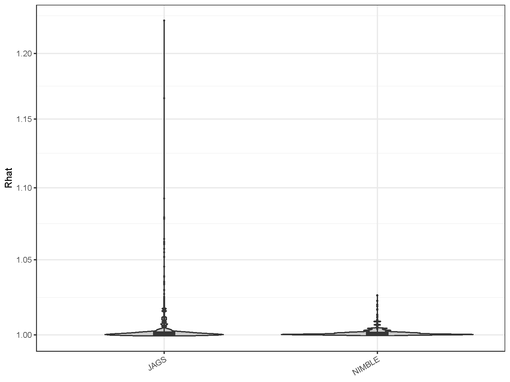
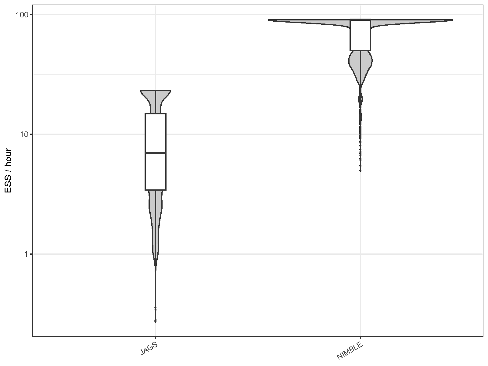
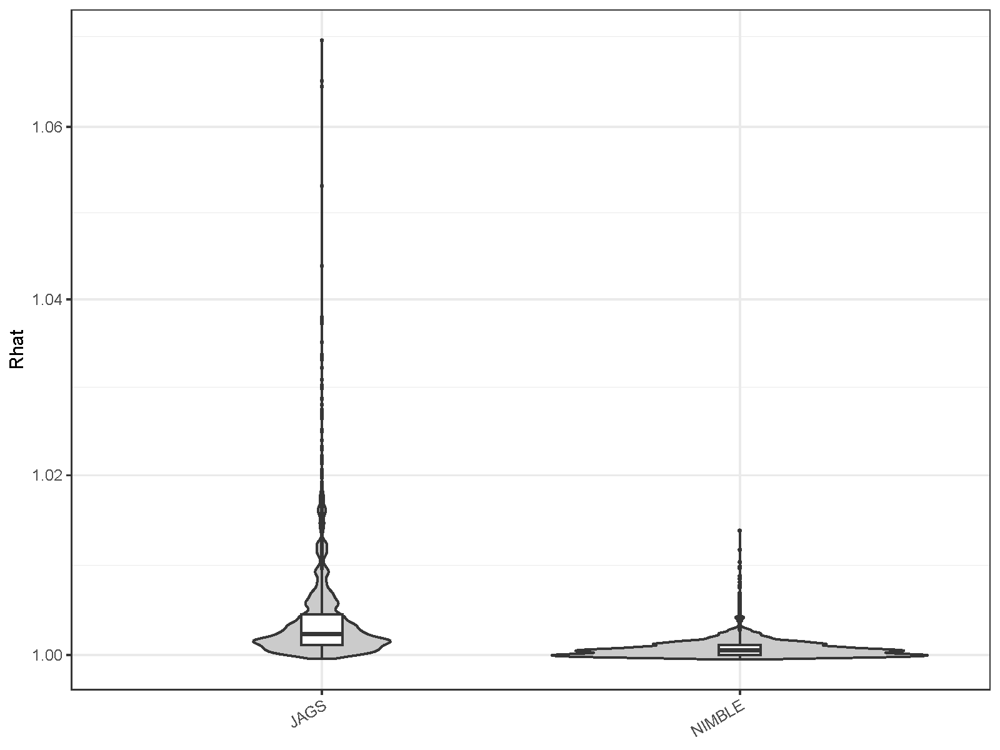

Options for MCMC engines in occumb()
Source:vignettes/mcmc_engine_options.Rmd
mcmc_engine_options.RmdAs of occumb v1.3.0, users can choose NIMBLE instead of JAGS for MCMC
sampling in the occumb() function. To use NIMBLE, simply
specify engine = “NIMBLE” when calling
occumb().
NIMBLE is an actively developed
MCMC engine. As shown in the benchmark results below, NIMBLE
demonstrates exceptionally high performance when fitting models with
occumb(). Therefore, while the default MCMC engine for
occumb() remains JAGS, users are encouraged to use NIMBLE
for model fitting.
NIMBLE allows flexible changes to the sampling algorithm for each
parameter. Taking advantage of this, occumb significantly improves
sampling performance in NIMBLE by specifying the Barker proposal
sampler—a gradient-based adaptive Metropolis-Hastings algorithm with a
multivariate normal proposal distribution—for Mu,
sigma, and r.
In NIMBLE, models are compiled at runtime, so there is a delay before MCMC begins. In addition, compared to fitting with JAGS, fitting with NIMBLE can require a longer burn-in period. Even so, NIMBLE is likely to take less time overall: at a modest estimate, NIMBLE can produce higher-quality MCMC samples in less than half the time required by JAGS.
Benchmarks
To evaluate NIMBLE’s relative performance compared to JAGS, a
benchmark was conducted using the fish eDNA dataset
included in the package and an aquatic insect
eDNA dataset. The same model was applied to each dataset using
occumb() to compare the distributions of effective sample
sizes (ESS) generated per unit time (hour), as a measure of MCMC
sampling efficiency, and the distributions of R-hat values, as a measure
of convergence, between JAGS and NIMBLE.
Fish dataset
In the model for the fish dataset,
formula_psi = ~riverbank and
formula_phi_shared = ~mismatch were specified. To ensure
that the chains converge to a stationary distribution, the following
MCMC settings were specified: n.burnin = 30000,
n.thin = 500, and n.iter = 530000 for JAGS,
and n.burnin = 750000, n.thin = 250, and
n.iter = 1000000 for NIMBLE. Three chains were run in
parallel.


| MCMC engine | Mean ESS per hour | Minimum ESS per hour | Maximum R-hat |
|---|---|---|---|
| JAGS | 33.692 | 0.222 | 1.226 |
| NIMBLE | 123.238 | 4.945 | 1.026 |
Compared to JAGS, NIMBLE showed a significant improvement in the ESS
generated per hour, with the average increasing by 3.7 times and the
minimum by 22.3 times. In NIMBLE, the R-hat values were also generally
lower than those in JAGS, indicating better convergence (pi
and z were excluded from the R-hat evaluation).
Aquatic insects dataset
In the model for the aquatic insects dataset,
formula_phi_shared = ~ order + mismatch and
formula_theta_shared = ~ order + vol were specified. To
ensure that the chains converge to a stationary distribution, the
following MCMC settings were specified: n.burnin = 50000,
n.thin = 200, and n.iter = 250000 for JAGS,
and n.burnin = 300000, n.thin = 200, and
n.iter = 500000 for NIMBLE. Three chains were run in
parallel.


| MCMC engine | Mean ESS per hour | Minimum ESS per hour | Maximum R-hat |
|---|---|---|---|
| JAGS | 9.737 | 0.273 | 1.070 |
| NIMBLE | 72.499 | 4.981 | 1.014 |
Again, sampling efficiency has improved significantly in NIMBLE compared to JAGS. Using NIMBLE, the average number of ESS generated per hour increased by a factor of 7.4 compared to JAGS, and the minimum value increased by a factor of 18.3; R-hat values were generally lower than those of JAGS.